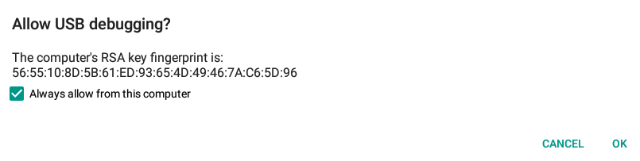
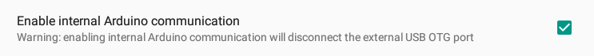

Switch Between Adb Debug And ADK Connection
Android (i.MX6 side) don’t use the internal UART serial to communicate with the Arduino™ DUE (Atmel SAM3X side) but the native USB OTG bus on both sides. The i.Mx6 processor is always connected to the bus while the other side of the bus can be physically connected to:
- The external micro USB connector (CN3) to communicate through adb with an External PC exactly like you do with an Android smartphone/tablet.
- The UDOO's Arduino™ DUE processor USB Native port to make communicate an Android App and an Arduino sketch through
ADKprotocol. The switch is controlled by two i.Mx6 pins.
To power on the USB OTG bus you need to plug the J2 jumper on which enables the voltage supply to the bus.
Connection with an external PC - USB Debug mode (ADB)
Since the 6.0 Marshmallow version, the default option let Android's OTG bus communicate with the external micro USB connector (CN3) to install, debug and test applications like a normal Android device.
The first time Android show an text alert like this.

Android asks you to accept the fingerprint of your pc. Select the option Always allow from this computer and press OK button.
If you launch a console on your host computer and you have installed the Android SDK, you can access to UDOO DUAL/QUAD with adb protocol.
Here you can download the Android SDK and get the full documentation.
Here is available the ADB protocol guide.
Connection between the two Processors - Android Accessory Mode (ADK)
With this configuration Android(i.MX6) communicates with the Arduino™ DUE(SAM3X) using the ADK protocol. The SAM3X needs to be programmed by a sketch which includes some specific libraries then install an App on Android configured to use the ADK protocol.
By default the USB OTG bus is connected to microUSB connector(CN3). To switch the OTG bus channel and use the ADK communication follow the steps listed in the appropriate section.
Here you can find some useful examples of how to program an Android App and an Arduino Sketch that communicate in single and bidirectional way.
Switching between modes
You can switch between the two USB OTG connection by Android Setting Interface or by commands in terminal.
GUI Switch
Since the 6.0 Marshmallow version, the UDOO Android distro comes with a custom UDOO section in Setting App to configure custom options for UDOO boards.

Visit the previous UDOO Android Setting section.
You can automatically switch between modes using the options menu checkbox.
Starting from home screen press on the application menu button.
Press the Settings button
From the left menu, under System, select “Developer options”
Under Debugging find this checkbox:
External OTG port enabled
Enable external OTG port for allow USB debugging (Warning: enabling external OTG port will disconnect internal communication with Arduino)
If External OTG port enabled is selected you can access the Android adb from an external computer.
If not the OTG is shared between i.Mx6 and SAM3X (so they can communicate with ADK protocol and use them together.)
Console Switch
Connect a microUSB cable to CN6 and plugging the J18 jumper then access to the UART serial with a terminal application (e.g Teraterm, Minicom, Serial Tools).
When you access the Android console you can switch between two modes.
Switch from INTERNAL ADK mode (i.Mx6 <-> SAM3X) to Debug Mode (microUSB plugged in CN3)
sudo -s
echo 0 > /sys/class/gpio/gpio203/value
echo 0 > /sys/class/gpio/gpio128/value
Switch from Debug Mode (microUSB plugged in CN3) to INTERNAL ADK mode (i.Mx6 <-> SAM3X)
sudo -s
echo 1 > /sys/class/gpio/gpio128/value
echo 1 > /sys/class/gpio/gpio203/value
When you switch from Debug to ADK mode, after you sent the two commands, you may need to reset the SAM3X and plug and unplug the J16 jumper. If you loaded a sketch that implements ADK protocol you should see an alert noticing you that the Android Accessory is now connected. If there is an app that matches the id on the Arduino sketch the alert asks you if you want to open this app.
On the top-left menu there is also a message that remind you the Accessory Connection.
This page was last updated on Monday, October 10, 2016 at 1:17 PM.